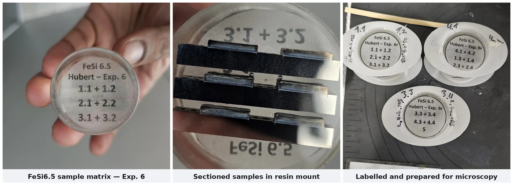
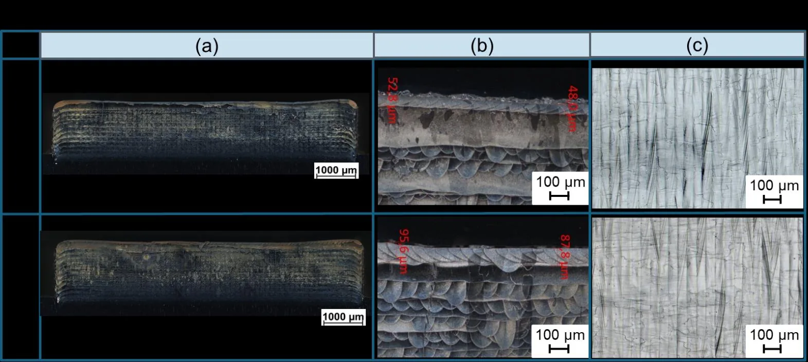
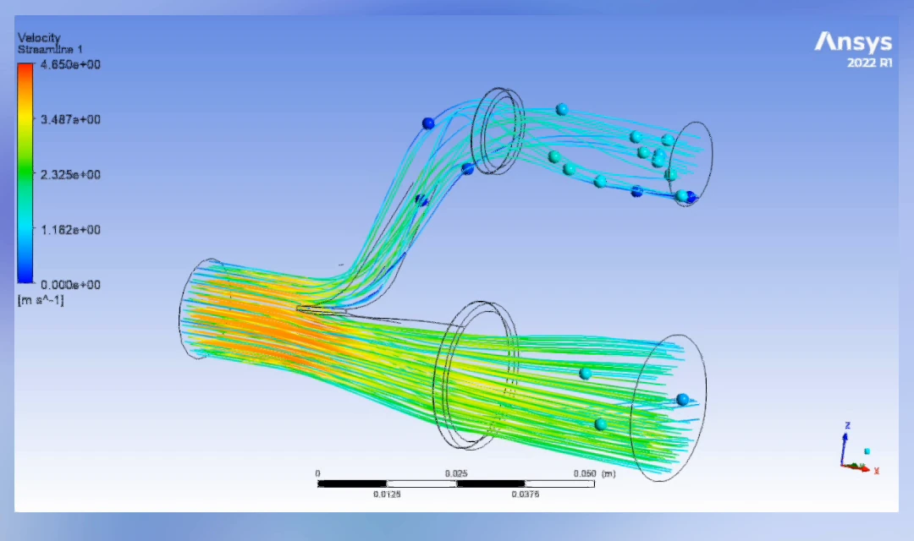
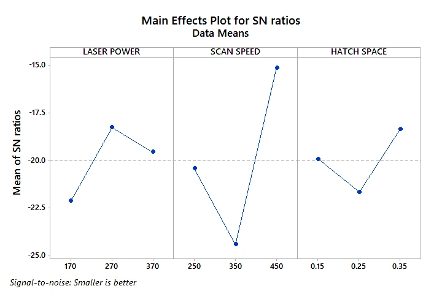

Each project below runs from the technical problem through the engineering approach to a quantified result. Metrics come from the thesis reports; measurement methods are named so the numbers can be checked.
Project 01 — Masterarbeit · PBF-LB/M process development
In-Process Laser Remelting for Precise Layer Topography in FeSi6.5 Soft Magnetic Components
Institution: Hochschule Aalen — LaserApplication Center (LAZ) · Research programme SmartPro – Smart-ADD Machine: ALC2 × ICM universal laser research system Supervisors: Prof. Dr. Harald Riegel (first) · Prof. Dr. Dagmar Goll (second) Submitted September 2025 · Defended October 2025 · Published in Procedia CIRP 124 (2024)
Problem statement
Over 40% of the energy lost in an electrical machine is lost to eddy currents. The standard countermeasure is lamination — stacking thin, individually insulated electrical steel sheets so the current has no continuous path. FeSi6.5, high-silicon iron, is the ideal material for this: high electrical resistivity, low coercivity, minimal magnetostriction, and up to 30% lower core losses than conventional silicon steel.
It is also so brittle that it cannot be rolled, stamped or cast without cracking. The industry therefore designs motors around what the rolling mill can produce, rather than around what the magnetic circuit actually wants.
PBF-LB/M removes the geometric constraint but introduces a new one. As-built layer surfaces are rough (Sa ≈ 4.55 µm), and a rough layer forces a thicker insulating recoat. Thicker insulation means thicker laminations, and thicker laminations bring the eddy-current losses straight back.
The task: establish a PBF-LB/M route for FeSi6.5 that produces deliberately smooth, controlled layer topography — flat enough to carry an ultra-thin insulating layer — while holding full density, without cracking, and without losing dimensional accuracy in an alloy that punishes every one of those mistakes.
Etched cross-sections — every-layer cyclic remelting (left) against normal build-up (right). Columnar grains give way to a continuous equiaxed structure. Sa 4.55 µm → 1.8 µm, at full density.The remelting principle: a standard build-up pass (blue, first exposure) followed by a rotated remelting pass (red, second exposure) over the same layer.
Engineering approach & tools
Phase 1 — Establish the baseline build window
Ran a 4 × 4 parameter matrix over laser power 200–350 W against scan speed 600–900 mm/s, at constant 80 µm hatch, 80 µm focus diameter, 40 µm layer thickness and 90° bidirectional scan rotation. Sixteen 10 × 10 mm samples at 5 mm spacing to suppress thermal cross-talk, 5–15° platform tilt to prevent recoater collision, argon at 4 m/s and < 200 ppm residual oxygen. Identified 150 W as insufficient to melt and 400 W as over-melting, and fixed the working point at 300 W / 800 mm/s ≈ 117 J/mm³, giving Sa 7.25 µm at 0.152% porosity.
Phase 2 — Final-layer remelting
Applied a single re-exposure to the top layer only, sweeping laser power 300–400 W against spot diameter 80 / 120 / 160 / 200 µm, hatch 60 µm, hatch offset 50–150%, rotated 90° from the preceding layer. Two competing failure modes emerged, and separating them quantitatively is what made the window achievable:
Molten-metal deposition at the part edges scales with power intensity — at 400 W / 160 µm the deposition reached 898 µm at 20.9 kW/mm²; at 300 W it fell to 545 µm at 15.7 kW/mm².
Remelting depth scales with areal energy intensity.
Reduced power intensity to suppress edge deposition while independently trimming areal energy density to control penetration depth — decoupling two effects that a single volumetric-energy-density figure conflates and cannot resolve.
Phase 3 — Cyclic remelting
Extended remelting from the top layer to the whole build, at intervals of every 1st, 2nd, 3rd and 5th layer, at fixed 325 W / 300 µm spot / 60 µm hatch / 150% hatch offset / 600 and 800 mm/s, against a non-remelted reference under identical conditions.
The four cyclic strategies tested: remelting every 1st, 2nd, 3rd and 5th layer, against a non-remelted reference.

The specimens behind every number on this page. Each build was sectioned parallel to the build direction, mounted in resin, ground and polished, then labelled by sample pair before microscopy.
Verification — performed in-house, end to end
Areal topography: KEYENCE VR-3100 one-shot 3D optical profilometer (Sa, elevation maps, line scans).
Tactile roughness: MarSurf M400 (Ra, Rq, Rz, Rt), measured both parallel and perpendicular to the scan vector — a directional process produces directional roughness, and a single-direction measurement would have flattered the result.
Cross-sections: Struers Secotom 10 sectioning and Tegramin 30 polishing parallel to the build direction, SiC 50–2000 grit, 3 µm and 1 µm diamond suspension, Co-m3 etch (20–30 s) for Fe-Si; imaged on the Zeiss Axio Imager.Z2 Vario to 500× with ZEN Core quantifying pore size, pore count/mm² and area-fraction porosity by adaptive thresholding.
Process hardware: TRUMPF TruFiber 400 single-mode fibre laser (1075 nm, 400 W) · SCANLAB intelliSCANse 30 scanner · varioSCANde II 40i PR z-shifter with negative defocusing · Autodesk AMCF control · Netfabb 2024 build preparation · hema ICAM weld coaxial monitoring.
Key contribution & results
Measure
No remelting
Final-layer remelting
Cyclic remelting (every layer)
Areal roughness Sa
~4.55 µm
~2.4 µm
~1.8 µm
Linear roughness Ra
> 2.5 µm
~1.5 µm
< 1.0 µm
Grain morphology
Columnar
Partially equiaxed
Fully equiaxed
Microstructural uniformity
Moderate
Improved
Excellent
Thermal stability
Good
Stable
Very stable
Overall improvement
—
+38% smoother
+60% smoother

Dark-field cross-sections at 800 and 600 mm/s, with measured remelting depths (48–96 µm here) and the resulting top layer. Across the full parameter set penetration stayed within a controlled 50–300 µm band.
Additional quantified outcomes
Porosity at the optimised build point
0.152% — essentially full density
Remelting depth, controlled range
50–300 µm, stable and reproducible across intervals
Cracking / delamination
None observed in any cyclically remelted sample
Embrittlement
No increase, despite repeated thermal cycling of a brittle alloy
Dimensional accuracy
Maintained
Parameter combinations characterised
30+, across three experimental phases
The finding that matters
Remelting is normally used to raise density. Here it works as a microstructure engineering tool: applied every layer, it repeatedly disrupts directional solidification, converting columnar grains to a continuous equiaxed structure through the full part height. Frequency is the control variable — every layer gives full transition, every 3rd layer at 600 mm/s gives partial transition, every 5th layer gives essentially none. That is a dial an engineer can set.
Publication
Hofele M., Antony H., Kolb D., Riegel H. (2024). Production of soft magnetic FeSi6.5 parts with precise layer topography using integrated laser remelting at PBF-LB/M to induce multi-material lamination.Procedia CIRP 124, pp. 6–11.
DOI: 10.1016/j.procir.2024.08.060
Project 02 — Machine development · CFD · System integration
Inlet Gas Circulation System for a PBF-LB/M Research Machine
Institution: Hochschule Aalen — LaserApplication Center (LAZ) · Machine: ALC2 Period: May 2023 – March 2024 Scope: Design · CFD analysis · Manufacture · Integration · Commissioning
Problem statement
In PBF-LB/M the laser vaporises metal, ejecting spatter and condensate into the build chamber. Whatever is not swept away lands back on the powder bed and is fused into the next layer as a defect, while airborne particulate attenuates and scatters the incoming beam.
On the ALC2 — a self-built research machine carrying the FeSi6.5 work — inconsistent inlet flow meant part quality depended partly on where on the plate the sample sat. That is fatal to a parameter study which has to attribute every difference to the parameter under test.
A second, coupled problem: FeSi6.5 is crack-sensitive. Solidification behaviour and grain structure depend on the thermal field, and an unheated build platform gives large thermal gradients and little control over how grains nucleate and grow.
The task: design an inlet gas circulation system that actively evacuates molten spatter away from the build platform rather than letting it settle back onto the bed, and combine it with build platform heating to influence grain structure formation — together enabling thermally controlled, precise manufacturing.
Live smoke-flow validation of the 3D-printed inlet nozzles on the test rig, confirming the directed gas curtain predicted in CFD.

Velocity streamlines through the inlet nozzle and diffuser assembly (ANSYS Fluent, 0–4.65 m/s). Design variants were selected on simulation evidence before fabrication.
Engineering approach & tools
Requirements definition. Established the target velocity envelope over the process zone, the flow direction needed to carry spatter clear of the plate rather than across it, and the geometric envelope imposed by the existing chamber — the system had to fit a machine that already existed.
Design (Konstruktion). Developed inlet nozzle and diffuser geometry in CATIA V5, iterating nozzle arrangement, outlet cross-section and flow-straightening features to convert a concentrated inlet stream into an even, directed curtain across the full build area.
CFD analysis (Strömungssimulation). Modelled the chamber flow field in ANSYS Fluent — meshing, boundary conditions, turbulence model selection, solution and post-processing. Evaluated velocity contours and streamlines at the powder-bed plane to locate and eliminate recirculation zones and stagnation points where spatter would settle instead of being carried out.
Design iteration against simulation. Ran successive geometry variants through CFD and selected on evidence rather than intuition — the loop that separates a designed component from a fabricated guess.
Physical validation. Built printed prototypes of the selected geometry and ran smoke-flow tests on a rig before committing to the machine.
Thermal control. Integrated build platform heating to reduce thermal gradients, influence nucleation and grain growth, and lower the residual stress and crack risk that brittle FeSi6.5 is most vulnerable to.
Manufacture. Produced the component by PBF-LB/M, monitoring the build live — recoater pass, laser exposure and melt-pool behaviour — against the parameter set on the machine control screen.
Integration and commissioning. Post-processed and integrated the assembly into the ALC2, and verified operation on live builds — the system subsequently carried the full thesis campaign at argon 4 m/s and < 200 ppm residual oxygen.
The component being built. Recoater pass, laser exposure and melt pool through the laser-safety window, with the live build parameters on the control screen.
As-built with supports, finished component, and the assembly integrated on the machine.
Key contribution & results
Spatter management
Active evacuation of molten spatter away from the build platform, instead of redeposition onto the powder bed
Flow field
Recirculation and stagnation zones at the powder-bed plane identified in CFD and designed out
Process atmosphere
Stable argon flow at 4 m/s with < 200 ppm residual oxygen sustained across full builds
Thermal control
Build platform heating integrated to influence grain structure formation and reduce thermal gradients
Manufacture
Component produced by PBF-LB/M and post-processed in-house, with the build monitored live against its parameter set
Delivery
Designed, simulated, manufactured and integrated — complete component lifecycle on operating research hardware
Downstream validation
The system carried the entire FeSi6.5 thesis campaign and the resulting peer-reviewed publication
Why this project is the differentiator
Most AM engineers optimise parameters on a machine. This work improved the machine itself, from requirement through CAD, CFD, prototype, physical validation, fabrication and commissioning — and the proof that it worked is that the research it enabled was published.
Project 03 — B.E. thesis · DMLS · Taguchi design of experiments
Porosity Minimisation in DMLS Cobalt-Chromium for Medical Implants
Institution: Jeppiaar Institute of Technology, Chennai · Lead author, four-person project team Period: February – May 2021
Problem statement
Co-Cr is a standard alloy for load-bearing implants — hip and knee joints, dental bridgework, stents — because it is biocompatible, corrosion-resistant and hard. Producing it by DMLS unlocks patient-specific geometry.
But porosity in an implant is not cosmetic: pores are fatigue crack initiation sites in a component required to survive millions of load cycles inside a human body, and Co-Cr already has low ductility.
The task: determine which DMLS parameters actually govern porosity in Co-Cr, rank them by influence, and identify the low-porosity operating region — using a statistically structured method rather than an unaffordable full-factorial campaign.
Co-Cr pore distribution at the best and worst parameter sets of the L9 array — a ~10× spread from parameter choice alone. Scan areas differ (5 × 5 µm and 10 × 10 µm) and are labelled on each panel.
Engineering approach & tools
Taguchi L9 orthogonal array. Three parameters at three levels — laser power (170 / 270 / 370 W), scan speed (250 / 350 / 450 mm/s), hatch spacing (0.15 / 0.25 / 0.35 mm) — in 9 runs instead of the 27 a full factorial demands. A deliberate trade of resolution for feasibility where machine time and powder were the binding constraints.
Sample manufacture. Built the full Co-Cr specimen set by DMLS across all nine parameter sets, executed in randomised order to avoid confounding by build drift.
Multi-method porosity quantification. Cross-checked porosity by micro-CT scanning and localised mass measurement rather than relying on a single technique.
Nanoscale characterisation. Used Atomic Force Microscopy to map pore distribution, area, volume and perimeter per sample, applying threshold and watershed grain-detection algorithms for automated pore identification.
Defect-mechanism reasoning. Separated keyhole porosity (spherical, excessive energy density collapsing the vapour depression) from lack-of-fusion porosity (irregular, insufficient melt-pool overlap) — opposite ends of the energy-density scale, requiring opposite corrections.
Statistical analysis. Signal-to-noise ratio analysis (smaller-the-better), ANOVA and contour-plot response surfaces in Minitab.

S/N response: scan speed dominates porosity (Δ 9.31) over laser power (3.87) and hatch spacing (3.31).
Key contribution & results
Experimental efficiency
9 runs instead of 27 — 67% less machine time and powder
Porosity range across the array
2.8% to 27.06% — nearly a 10× spread from parameter choice alone
Best measured result
2.8% porosity at 270 W / 450 mm/s / 0.15 mm hatch
Dominant factor
Scan speed — S/N delta 9.31, against 3.87 for laser power and 3.31 for hatch spacing
Micro-CT, localised mass measurement and AFM pore mapping, cross-validated
The engineering conclusion
Scan speed dominates porosity in DMLS Co-Cr by roughly 2.5× over the next factor — which is not the intuitive answer, since laser power is the parameter most operators reach for first. Establishing that ranking is what makes the process controllable: it tells you which dial to turn.
Why this project still matters. It is where the method was set. Orthogonal design, cross-validated measurement, defect-mechanism reasoning rather than parameter guesswork — the same discipline produced the published FeSi6.5 result four years later on a harder alloy and a harder objective. It also establishes credibility in a second regulated field: medical technology.
Further project work
Project
Scope
Period
Sustainable Product Development using AM
Life-cycle comparison of additive vs. conventional manufacturing; DfAM lightweighting and material-efficiency assessment
2019–2020
Utility Bicycle — Design and Fabrication
Complete mechanical design and build: concept, structural design, fabrication
2019
Concept Vehicle Exterior Design
Exterior design for a 2026 concept car; sketching, rendering, surface modelling. Winning team, ASBC 2019, Bangalore
2019
Robotics & Automation Integration
End-to-end automation system development and integration for home and industrial products